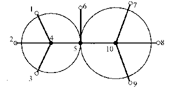
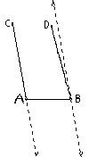
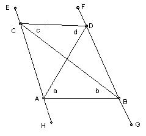

Ten gangsters are standing in a field. The distance between each pair of gangsters is different. When the clock strikes, each gangster shoots the nearest gangster dead. What is the largest number of gangsters that can survive?
Solution
Answer: 7.
Obviously at least two gangsters die: someone must get shot, but he must shoot someone else. It is easy to arrange for just four to die. Take four roughly in a circle around a fifth. All four shoot the gangster in the center, and he shoots one of those in the circle. So two out of the five die. Arrange the other five similarly, some distance away. However, with a little care, we can reduce that to three gangsters dying, by arranging that the two central gangsters both shoot the same gangster. Consider the situation below. The lh circle is slightly smaller than the rh circle. The angles 142, 243, 7 10 8, 9 10 8 are slightly greater than 60o. The distance 56 is the same as the radius of the larger circle. Thus 1, 2, 3 and 5 shoot 4; 4, 6 and 10 shoot 5; 7, 8 and 9 shoot 10. So 4, 5, 10 die and the others survive.

So we have to show that we cannot have just two gangsters die. It is surprisingly difficult.
We cannot have six gangsters all shooting the same person. For suppose A, B, C, D, E, F all shoot O. Suppose ∠AOB ≤ 60o. Since OA and OB are assumed to be unequal, angles OAB and OBA are unequal. Hence at least one of them > 60o. Suppose it is ∠OAB. Then ∠OAB > ∠AOB, then OB > BA, so B should shoot A not O. Contradiction. Similarly, if ∠OBA > 60o. So ∠OAB > 60o. Similarly, each of the other angles BOC, COD, DOE, EOF, FOA must be > 60o. But the sum of the six angles is 360o. Contradiction. So at most 5 gangsters can shoot the same person.
So assume that it is possible to arrange 10 gangsters so that only two die. Let A and B be the two closest gangsters. Then they must shoot each other. So we have to show that every other gangster shoots A or B. Since at most 5 gangsters can shoot the same person, 4 of the others must shoot A and 4 must shoot B. Using the result in the previous paragraph if C is the next gangster anticlockwise from B who shoots A and C' the next gangster clockwise then, the ∠CAC' < 180o. Take the line through B parallel to AC (the dotted line in the diagram below). If D and D' are the two gangsters either side of A in the group who shoot B, then ∠DBD' < 180o, so either D or D' lies in the strip between the two parallel lines. Hence we may take ∠CAB + ∠ABD < 180o (for if it is not, then ∠C'AB + ∠ABD' < 180o and we just relabel).

D is closer to B than A (by assumption), so it lies on the same side of the perpendicular bisector of AB as B. Similarly, C lies on the same side as A. So the quadrilateral ABDC has its vertices in that order (with no sides intersecting except at vertices). Now CA < CD (since C shoots A not D). So ∠CDA < ∠CAD. Hence ∠CDA < 90o. BA is the shortest side of ABD, so ∠ADB < 90o. Hence ∠CDB < 180o. Similarly, ∠ACD < 180o. So ABDC is convex. Label the angles a, b, c, d as shown below.

We have ∠HAB = b + ∠ACB < 2b (since AB > AC). Similarly ∠GBA = a + ∠ADB < 2a. So 2a + 2b > ∠HAB + ∠GBA > 180o. Similarly, ∠ECD = d + ∠CAD > 2d (since CD > CA) and ∠FDC = c + ∠DBC > 2c, so 2c + 2d < ∠ECD + ∠FDC < 180o. Hence c + d < a + b. Contradiction, since they are obviously equal.

© John Scholes
jscholes@kalva.demon.co.uk
10 Oct 2002